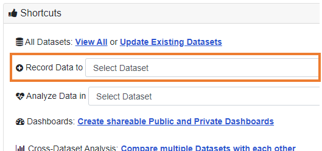
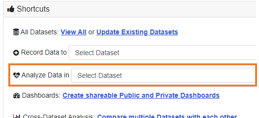

LibInsight: data entry overview
UBC Library Data Team
Jeremy Buhler, Brett Dimond, Meghan Waitt
July/August 2022
Session content
- Overview and timeline
- Logging into LibInsight
- Entering data
- Getting help
slides at https://bit.ly/libinsight-training


To annotate in a Zoom presentation


Overview and timeline
Project scope
Migrate Desk Tracker forms to LibInsight datasets
Gate counts will also migrate to LibInsight; separate training will be offered to current gate count reporters.
Timeline
- Self-serve online documentation published - July 22
- Drop-in training sessions completed - Aug 20
Switch to LibInsight Sep 1, 2022
Differences from Desk Tracker
CWL-based user accounts
Library employees will login with CWL
New names for datasets
Datasets have new names that reflect their content and align with ARL survey definitions
| Desk Tracker | LibInsight |
|---|---|
| Activity | Patron questions |
| Classes | Group presentations |
Identifying the desk
LibInsight does not identify desk at login, it is a field in the dataset
More control over datasets
Branches/units can customize their own Patron questions datasets by adding fields for local needs
https://libraryubc.libinsight.com
LibInsight login screen (choose CWL Authentication)

Use the shortcuts menu on the home screen to
record data
analyze data
Patron questions dataset, Asian Library
Patron questions dataset, Asian Library
First column is for required core fields
Patron questions dataset, Asian Library
Second column is for optional core fields
Patron questions dataset, Asian Library
Third column is for optional custom fields
Direct access with a URL
Each dataset can also be opened with a URL
A list of dataset URLs is in Confluence at https://confluence.it.ubc.ca/display/ASMNT/How+to+access+LibInsight
Practice!
Open the Patron questions or Group presentations dataset and submit an entry
Two ways to open a dataset:
- Login at https://libraryubc.libinsight.com and select from dataset menu
- Click the dataset URL from the list at https://confluence.it.ubc.ca/display/ASMNT/How+to+access+LibInsight
Getting help
Consult LibInsight pages in Confluence
https://confluence.it.ubc.ca/display/ASMNT/LibInsightConsult the LibInsight contacts for your branch/unit
https://confluence.it.ubc.ca/display/ASMNT/LibInsight+contactsRequest help from Library Data Team
https://helpdesk.library.ubc.ca
Library Data and Reports form